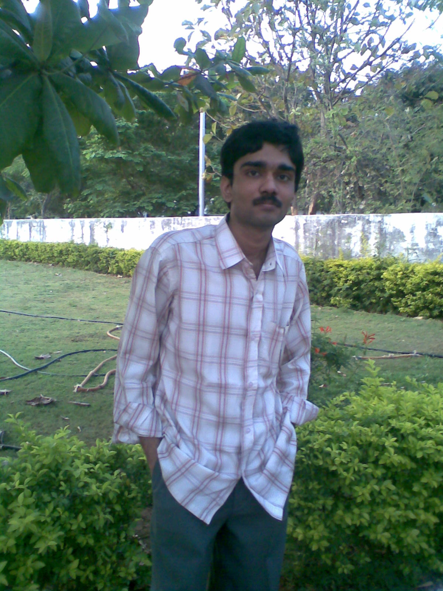
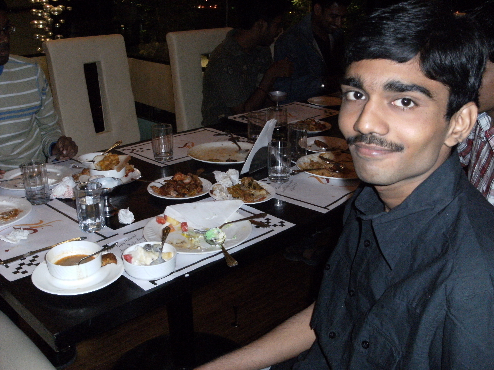

The Yearbook - Commemorating 2005-09!
Ravi Chandra's profile information
Name - Ravi ChandraBirthday - 13-09-1988
Email - matrixravi@gmail.com
Address - Rajahmundry
Phone - 9052551445
Webpage - Link
Hobbies - Table Tennis, TV shows blah blah blah ....
WishList - IAS IPS lantivi kakunda inka vere emaina
Memorabilia - My first birth day in IIIT
What would you want to be remembered as - I'd like to be remembed as a good friend to you all. And I know you'll definitely remember me as 'mokka' .
Future Plans - I never think of the future. It comes soon enough.
Testimonials written by Ravi Chandra
Ravi Chandra's Album

{kind=link}
Default caption

Default caption

{kind=link}
Default caption
Testimonials
sana wrote-mokka...first of all display pic adurs ra....
he is one of the thinnest guys in iiit....
He works during nite time
 and sleeps in day time....i have never seen in mess during breakfast...
and sleeps in day time....i have never seen in mess during breakfast...
He is very talented but baddakam ekkuva....start making use of ur talent dude...
veediki orkut lo community create chesarante inka ardam chesukovochchu ...........
TT keka aaduthadu and a good throw bowler
in crkt...
All in all, he is a very good frnd and all de best for ur future ra..........
Chakrapani wrote-
Mokka...His cute name

His display pic says it all..the yoyo man...verri mokka..

A very cool and calm guy..the first birthday bumps & celebrations @ GHEB started with this guy..it was a fantastic night..what an enjoyment..i can never forget that night..mokka hitting people around with stones..

He is on guy along with bonthala who keeps very very cool even when all the world is burning
whatever may be the problem he never cares..just be what you are...thats what his philosophy is..
Had a very nice time with you man!!!
Keep going..ALL the Best for your brightest career!!
Samuel John wrote-
step up 2 da streets movie lo DJ gurthostaadu veedini chuda gaaney naku , rapper style walk , innocent face ....
veedi emacet rank chepthundhi veedi keka talent ni
 , operating systems tho aadukuntu untaadu
, operating systems tho aadukuntu untaadu  , intersest unna panulani 200% sharp and interest tho chestaadu
, intersest unna panulani 200% sharp and interest tho chestaadu
pickle maatram konchem kooda pettadu
 , gaming freak ..andharu veedi room ki vachi veedini aadukuni maree chesevaallu ayina anni sportive gaa teeskunna keka dude veedu
, gaming freak ..andharu veedi room ki vachi veedini aadukuni maree chesevaallu ayina anni sportive gaa teeskunna keka dude veedu
touch lo undu mamaaa
----
Bhanukiran Vinzamuri wrote-
mama photo keka asalu , mokka veedu oka ideal bapan. Nenu rules ankunte veedu Onion kuda tinadu
. Asalu veedi orkut community keka danilo manohar vihari rasina kavitalu inka keka .TT chaala baga aadtadu. Oka sari padka vesadu ante inka enta door kotina legvadu . Edaina Mokka nuvvu keka ante Nagarjuna Pavan Kumar G wrote-
kinda Satish gaadu raasina testimonial lo naa creativity chaalaa undi...so naa testi elaa unnaa, adi koodaa kalupukovaalani praarthana...
mokka-naaku veedini alaa pilavadam nacchadu...
ravi ani piliste enta baavuntundi...??
kaani durmaargam entante veediki aa mokka peru pettatamlo naa role chaalaa undani peddagaa evarikii teliidu...kaani aa pere veediki maa batch lo anta craze testundani nenu oohinchaledu...
sare vishayaanikoste...
mokka-veedikkonchem tikka...(praasa kudirindi kaduu)....kaani adi chaalaa rare phenomenon.
veediki keka talent undi...andulo doubt ledu...
math skills naaku ekkuvani naaku pogaru...kaani veedi laanti vaadini chooste naaku okkosaari siggestundi...
 veedu games(computer) baagaa aadataadu...ullipaaya tinadu...ee ullipaaya tinakapovadamanedi maa discussion lo regular gaa vastundi..anduke raasaa...
veedu games(computer) baagaa aadataadu...ullipaaya tinadu...ee ullipaaya tinakapovadamanedi maa discussion lo regular gaa vastundi..anduke raasaa...
veedi chetilo regular gaa TT odipotunnaa...gelustaa raa..gelustaa....
veedi talent ni baagaa vaadukovaalani naa korika...so future lo edannaa business pedite veedini kalupukuntaa...
kummey raa...all the best...
yours friendly
Nagarjuna
Srirang Ranjalkar wrote-
display pic kummesaav ga assalu
Trivia: He is the first one to get bumps on his ass in 2k5 batch.
On the day of his first birthday in IIIT, I didn;t even know this chap. All I knew was that Mokka got 41 in EAMCET and is a very talented guy. I still remember how we did a hell lot of racha on his birthday. I never wanted to kick his ass looking at his physique but couldn;t control myself looking at all
 things he used to do/say back then.
things he used to do/say back then.
He's a very good friend of mine. Plays all small games. Sbdy told me that he covered almost every game (size <2 MB) on the LAN.
He was the one who started playing Family Feud and made us join too. And that was real fun dude.
But the best part was shouting "Mokka" .. "Mokka" in Jayanti Mam's class in first year for which he became very famous and was the driving force to start the Yerri Mokka community on orkut. And all the BC in the community was simply unforgettable.
.
He looks all innocent and all but actually he's a very smart guy. He's the probably next to best when it comes to any quizzes / word power games / number games / etc etc on Facebook.
to your talent dude. How come you do all those quizzes so quickly. Seriously, I'm left with no option but to believe that you've got the biggest brains amongst all my friends in FB. 
Keep rocking buddy and all the very best for your future.
Love
Dj Ranga.
Purushotham wrote-
[contd ..] first time IMAX kooda, adi kooda The Dark Knight movie ki, veedi vallane. Escalator kooda first time ekkindi veedi vallane.
Chala helping nature. Mama em cheppali ra inka, nuvvu chala manchodivi ra ..kathi, turumu, keka ra nuvvu ..
Mokka, I wish all the best for yout future. Enjoy your life mama .. andaraoo bagundali .
Purushotham wrote-
rap mokka. aa photo choodandi . ,Pichi mokka, erri mokka, tokkalo mokka as I call him, recent ga parichayam ayina mera zhan zhigri gadu. Highly talented, time vachentavaraku talents bayatiki raaneyadu. Maths lo king, Tennis database, Federer, Nadala, Verdasko, Murray andariki fan. Murray gadini, federer/nadal gaadu d**tunte veedi anandam choodali baboi.. LOL. Inka, veedu, satish gaadu aa RJ lo chesina hungama antha intha kadu. vaademo mokka mokka antunte, veedu satti satti, keka ra iddaroo. Mahesh babu fan. Rojuki minimum >=16 hours nidrapokunte veedi body oppukodu. alaagani mabbu gadu kadu. pani meeda kurchunte chesestadu. kasi Kukka. Rojuki minimum 2 pootalaa tinadam maanesi padukune untadu. naaku artham kadu, nenu oka poota tinakunte neerasam vachestundi, ee pandi gadiki raadu adento ani. eppudu padithe appdu nidra lestadu, oka time ledu padu ledu, night 12 ki lechi, light aapesukuni serials choostadu. puzzles solve cheyadam lo keka. PP tennis game eppudoo aadutu untadu item fellow. prapancham lo leni chala manchi unique qualities veedi sontham. paina cheppivani andulo konni. naaku evaroo cheppoddu ra, naa istam aithe nenu chestanu antadu. Naaku veedilo nache vatilo idokati.
chala sarlu item ayyadu mokka gadu, mess ki t-shit reverse vesukuni vachina roju keka ra mokka. pekata raraju.2 sarlu cell fones mabbu lo pogottukunnadu. very very good friend. recent ga aa azeem gaadu iddariki pizza la ruchi choopinchadu, nenu dadapu marichipothe, ee item gadu vatiki ankitam ayyadu, week ki two medium veg country special without onian on the offer of 240 per 2. idi veedi pizza la sangathi. intlo name ravi, college name mokka.
Yes Mokka rocks. Roju 2 times tinakunna, TT gantalu gantalu aadestadu.stamina ki naa johar ra.
Veedipaina "Mokiri" ane movie ni wulfor gaaru teeyali anukunnaru, kani konni karanala valana cinema atakekkesidi. Bhavishyat lo teeyagalarani aasisthunnanu.
Mokka, I love you mama.. nuvvu ilaage undu. nenu veedu kalisi, oka 3-5 concerts ki velli untamu. alaage shopping.
Satish Varagani wrote-
mokka...aa peru vintene first year lo maa batch antaa kalakalam...kalavaram...IIIT UG2k5 charitralo first bumps tinna birthday boy mokka..mokka...one and only mokka...we love mokka..movies,Mahesh,NTR,Pawan trio gurinche eppuduu ekkuva discussion jarigedi maaku.veedu pakka mahesh babu fan.veedi first year lo id ento telusaa..??
ravi.athadu@gmail.com
veedilo ekkuva mandi observe cheyyani konni keka vishayaalunnaayi...few among them are his quant skills,keka memory power.
veedu pagalu padukuntaadu..raatri recchipotaadu.
ekkuva oohinchukokandi..burra paadavutundi.
veediki games picchi koodaa baagaa undi...addamaina games install chestaadu...aakhariki facebook lo crazy taxi koodaa vadaladu...
maa iddari combo ki manchi success rate undi..
memu janaalni baane entertain chesaamanukunta..
RJing and antyaakshari lo maaku manchi chemistry kudirindi. idi maaku paina cheppina cine discussions valane vacchina chemistry.
asalu vishayam marchipoyaa...cards...tellavaarluu poddugookuluu aadutuu madhyalo tintaaniki maatram break teeskunevaallam. idi IIIT charitralo suvarnaaksharaalato likhinchadagga amsam.
ivi minimum details maatrame..exhaustive list kaadu..for more information, contact 9052551445
Edemainaa, ee mokka mahaavrukshamgaa edagaalani manasaaraa korukune priya mitrudu-Satish